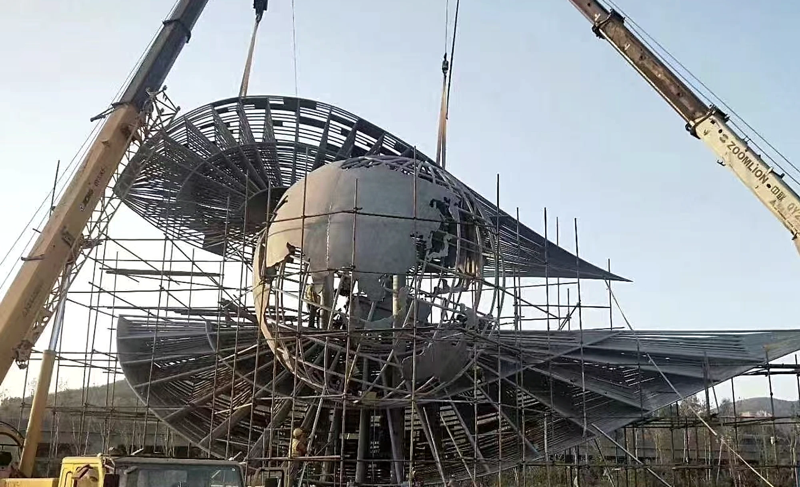

Custom sculpture for civic plazas, parks, community spaces and public landmarks. Review the relationship to the site, long views, weather exposure and structural coordination before defining the work.
Landscape & Public Art
Custom sculpture for civic plazas, parks, community spaces and public landmarks. Review the relationship to the site, long views, weather exposure and structural coordination before defining the work.
Start with your project
Public-space teams, landscape architects and project contractors.
Civic focal points, park sculpture and landscape landmarks.
Public settings; a hotel garden or attraction remains with its own project category.
Agree the scope
Provide the site plan, intended scale, ground levels, main views and nearby pedestrian or vehicle routes.
Identify exposure, drainage, foundations, structural review and local approval responsibilities.
Plan transport segments, unloading, lifting, assembly access and future inspection or maintenance requirements.
Images and evidence
The Middle East flying-bird images remain construction records. The horse images show separate WEIERYANG works. Discuss form, bases and sightlines without assuming a shared project, location or completed delivery.
Verified construction record — Verified Middle East construction record: installation in progress.

Verified construction record — Verified construction-phase record: segmented structural assembly.
WEIERYANG production record — Workshop view of the horse silhouette and visible layers. Review approved profiles, layer relationships, base connections and transport requirements.
WEIERYANG production record — Outdoor view of a reflective horse form. Use the base and surrounding sightlines to discuss placement; the photograph does not define a new project’s installation scope.
Coordinate drawings, transport segments and site responsibilities
For a landscape architecture project, sculpture design starts with approach views, ground levels, planting and exposure. A brief for outdoor landscape sculptures should then define the approved form, model development, fabrication interfaces and the responsibilities retained by the site team.
Establish the site basis
Provide site and base-interface drawings, proposed scale, levels, exposure, main views and available access information. Identify information still to be confirmed.
Review interfaces before fabrication
Agree responsibility for local structural review, foundations, anchors, transport joints and lifting arrangements. Request the relevant drawings and approval records.
Plan release and assembly
Define segment markings, packing and assembly information, unloading and crane access, on-site responsibilities and requested inspection or maintenance documents.
Before an OEM quotation
Separate sculpture fabrication and structural development from local engineering approval and site construction.
Specify the fabrication, measurement or trial-assembly evidence requested before shipment.
Name the delivery point and responsible parties for import, unloading, foundations, lifting and installation.
Before you commission
Should every outdoor sculpture be placed in this category?
No. Classify by the commissioned project: a hotel courtyard stays with Hotels & Commercial Spaces, while a sculpture inside a themed destination stays with Tourism & Themed Art Installations.
Does the sculpture proposal include foundations and local installation?
The proposal must specify inclusions and responsibilities. Foundation design, local engineering, cranes, site works and installers are not assumed included. WEIERYANG’s overseas installation guidance is agreed separately from local contracting.
Can a public-art sculpture be fabricated from an appointed designer’s drawings?
The drawings can be reviewed with the project team. Establish the permitted design use, current revisions, fabrication scope and local engineering responsibilities. A sculpture photograph does not establish a load rating, verified foundation design or certification.
Which documents should be agreed before a segmented sculpture ships?
Agree the required segment identification, packing list, assembly drawings, relevant measurements, approved changes and installation or maintenance information. The exact package depends on the design, destination and responsibilities recorded in the project proposal.
How should landscape sculpture design be separated from fabrication in the proposal?
Ask the proposal to identify site analysis, concept views and model development separately from fabrication to approved drawings. Record the design revision, materials, finish, base interface and the point at which approval permits production. Name the parties responsible for local structural review, foundations and installation, and show which design or site tasks are included, excluded or still to be confirmed.
Tell us about your space.
Share the project location, intended placement, drawings or dimensions, artwork and installation requirements. The proposal will define the design, fabrication and delivery scope.
Authorized visual reference — Authorized commercial-space reference: sculpture, water edge and visitor circulation.
Custom sculpture for hotel lobbies, resort arrivals, atriums, offices and shared commercial areas. Begin with the architecture, visitor routes and the team responsible for approvals.
WEIERYANG fabrication record — WEIERYANG fabrication record: an overall view of the hand-form arrangement.
Custom sculpture for restaurants, cafes, bars, retail stores and brand flagships. Develop a recognisable focal point around the venue’s identity, customer circulation and daily operations.
WEIERYANG fabrication record — WEIERYANG fabrication record: portrait form and painted colour areas.
Custom sculpture for visitor destinations, cultural streets, themed attractions and character-led spaces. Develop a coherent visual theme alongside visitor routes, viewing distances and the site team’s requirements.
Verified construction record — Verified Middle East construction record: installation in progress.
Custom sculpture for civic plazas, parks, community spaces and public landmarks. Review the relationship to the site, long views, weather exposure and structural coordination before defining the work.